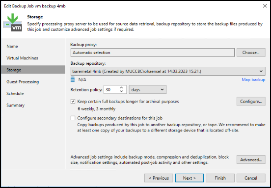
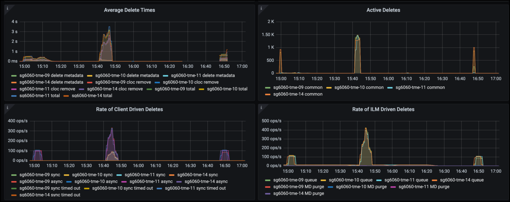
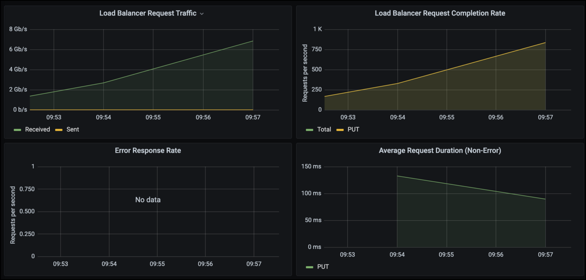

已驗證的協力廠商解決方案
已驗證的協力廠商解決方案
使用 Veeam 備份與複寫進行部署的 StorageGRID 最佳實務做法
 建議變更
建議變更
本指南著重於 NetApp StorageGRID 和部分 Veeam 備份與複寫的組態。本白皮書是專為熟悉 Linux 系統、且負責與 Veeam 備份與複寫搭配維護或實作 NetApp StorageGRID 系統的儲存與網路管理員所撰寫。
總覽
儲存管理員希望透過解決方案來管理資料的成長、以滿足可用度、快速恢復目標、擴充以滿足需求、並自動化長期保留資料的原則。這些解決方案也應提供防範遺失或惡意攻擊的保護。Veeam 與 NetApp 攜手合作、共同打造結合 Veeam 備份與恢復功能與 NetApp StorageGRID 的資料保護解決方案、以供內部部署物件儲存使用。
Veeam 與 NetApp StorageGRID 提供易於使用的解決方案、可共同協助滿足全球各地快速資料成長與法規不斷增加的需求。雲端型物件儲存設備的恢復能力、擴充能力、營運效率和成本效益、是備份目標的自然選擇。本文件將針對您的 Veeam 備份解決方案和 StorageGRID 系統的組態提供指引和建議。
Veeam 的物件工作負載會建立大量的小型物件並行置放、刪除及清單作業。啟用不可變性將會增加物件存放區的要求數量、以設定保留和列出版本。備份工作的程序包括寫入每日變更的物件、然後在完成新寫入後、工作將會根據備份的保留原則刪除任何物件。備份工作的排程幾乎總是重疊的。這種重疊會導致大部分的備份時間、由物件存放區上的 50/50 Put / delete 工作負載所組成。在 Veeam 中調整工作時段設定的並行作業數、增加備份工作區塊大小、減少多物件刪除要求中的物件數目、以增加物件大小。 選擇工作完成的最長時間範圍、將可針對效能和成本最佳化解決方案。
請務必閱讀的產品文件 "Veeam 備份與複寫" 和 "StorageGRID" 開始之前。Veeam 提供計算器、用於瞭解 Veeam 基礎架構的規模、以及在調整 StorageGRID 解決方案規模之前應使用的容量需求。請務必在 Veeam Ready 方案網站上查看 Veeam-NetApp 驗證的組態 "Veeam Ready Object 、 Object Immutable 和 Repository"。
Veeam 組態
建議的版本
建議您隨時保持最新狀態、並為 Veeam 備份與複寫 12 系統套用最新的 Hotfix 。目前我們建議至少安裝 Veeam 修補程式 P20230718 。
S3 儲存庫組態
橫向擴充備份儲存庫（ SOBR ）是 S3 物件儲存的容量層。容量層是主要儲存庫的延伸、提供較長的資料保留期間和較低成本的儲存解決方案。Veeam 可透過 S3 物件鎖定 API 提供不變的功能。Veeam 12 可以在橫向擴充儲存庫中使用多個儲存庫。StorageGRID 對單一貯體中的物件數量或容量沒有限制。使用多個貯體可在備份大型資料集時改善效能、而備份資料可能會在物件中達到 PB 規模。
視您的特定解決方案和需求規模而定、可能需要限制並行工作。預設設定會為每個 CPU 核心指定一個儲存庫工作插槽、並針對每個工作插槽指定 64 個並行工作插槽限制。例如、如果您的伺服器有 2 個 CPU 核心、則物件儲存區總共會使用 128 個並行執行緒。這包括「放置」、「取得」和「批次刪除」。建議您在 Veeam 備份達到新備份的穩定狀態並即將過期的備份資料後、選擇一個保守的工作時段限制、以開始調整此值。請與您的 NetApp 客戶團隊合作、適當調整 StorageGRID 系統的規模、以符合所需的時間和效能。若要提供最佳解決方案、可能需要調整工作插槽數量和每個插槽的工作限制。
備份工作組態
Veeam 備份工作可以使用不同的區塊大小選項進行設定、這些選項應該仔細考慮。預設區塊大小為 1MB 、 Veeam 提供的壓縮與重複資料刪除儲存效率可為初始完整備份建立約 500KB 的物件大小、而增量工作則建立 100-200kB 物件。我們可以選擇較大的備份區塊大小、大幅提升效能、並降低物件儲存區的需求。雖然較大的區塊大小可大幅改善物件儲存區效能、但由於儲存效率效能降低、因此可能會增加主要儲存容量需求。建議將備份工作設定為 4 MB 區塊大小、以建立大約 2 MB 的物件來進行完整備份、並將 700kB-1MB 的物件大小用於遞增。客戶甚至可以考慮使用 8 MB 區塊大小來設定備份工作、這可在 Veeam 支援的協助下啟用。
執行不可變備份時、會使用物件儲存區上的 S3 物件鎖定。不可變選項會產生更多要求、要求物件存放區列出物件並更新保留資料。
當備份保留過期時、備份工作會處理物件的刪除。Veeam 會將刪除要求傳送至物件存放區、每個要求的多物件刪除要求為 1000 個物件。對於小型解決方案、可能需要調整以減少每個要求的物件數量。降低此值將有助於更平均地在 StorageGRID 系統中的節點之間分配刪除要求。建議使用下表中的值作為設定多物件刪除限制的起點。將表格中的值乘以所選應用裝置類型的節點數、即可取得 Veeam 中的設定值。如果此值等於或大於 1000 、則不需要調整預設值。如果需要調整此值、請與 Veeam 支援人員合作進行變更。
| 應用裝置機型 | S3 每個節點的 MultiObjectDeleteLimit |
|---|---|
SG5712 |
34. |
SG5760 |
75 |
SG6060 |
200 |

|
請與您的 NetApp 客戶團隊合作、根據您的特定需求、取得建議的組態。Veeam 組態設定建議包括：
|
StorageGRID 組態
建議的版本
含最新 Hotfix 的 NetApp StorageGRID 11.6 或 11.7 是 Veeam 部署的建議版本。StorageGRID 11.6.0.11 和 11.7.0.4 中引進許多最佳化功能、對 Veeam 工作負載有幫助。建議您隨時保持最新狀態、並為您的 StorageGRID 系統套用最新的 Hotfix 。
負載平衡器和 S3 端點組態
Veeam 要求端點僅透過 HTTPS 連線。Veeam 不支援未加密的連線。SSL 憑證可以是自我簽署的憑證、私密信任的憑證授權單位或公開信任的憑證授權單位。為了確保能持續存取 S3 儲存庫、建議在 HA 組態中至少使用兩個負載平衡器。負載平衡器可以是 StorageGRID 提供的整合式負載平衡器服務、位於每個管理節點和閘道節點、或是第三方解決方案、例如 F5 、 Kemp 、 HAProxy 、 Loadbalanacer.org 等 使用 StorageGRID 負載平衡器可設定流量分類器（ QoS 規則）、以排定 Veeam 工作負載的優先順序、或將 Veeam 限制為不影響 StorageGRID 系統上的高優先順序工作負載。
S3時段
StorageGRID 是安全的多租戶儲存系統。建議您為 Veeam 工作負載建立專用租戶。您可以選擇性地指派儲存配額。最佳實務做法是啟用「使用自己的身分識別來源」。使用適當的密碼來保護租戶根目錄管理使用者的安全。Veeam Backup 12 需要 S3 儲存區的一致性。StorageGRID 提供多種在貯體層級設定的一致性選項。對於具有 Veeam 從多個位置存取資料的多站台部署、請選取「 Strong-global 」。如果 Veeam 備份與還原僅發生在單一站台上、則一致性層級應設為「 Strong-site 」。如需更多有關貯體一致性層級的資訊、請參閱 "文件"。若要使用 StorageGRID 進行 Veeam 不可變備份、必須在建立貯體期間、全域啟用 S3 物件鎖定、並在貯體上設定。
生命週期管理
StorageGRID 支援複寫和銷毀編碼、可在 StorageGRID 節點和站台之間提供物件層級保護。銷毀編碼需要至少 200kB 物件大小。Veeam 的預設區塊大小為 1MB 、產生的物件大小通常會低於 Veeam 儲存效率之後的 200 KB 建議最小大小。為了達到解決方案的效能、建議不要使用跨越多個站台的抹除編碼設定檔、除非站台之間的連線能力足以避免增加延遲或限制 StorageGRID 系統的頻寬。在多站台 StorageGRID 系統中、 ILM 規則可設定為在每個站台上儲存單一複本。為了達到極致的耐用性、可設定規則、在每個站台儲存銷毀編碼複本。使用兩個本機複本到 Veeam 備份伺服器是此工作負載最建議的實作方式。
實作重點
StorageGRID
如果需要不可變性、請確保 StorageGRID 系統上已啟用物件鎖定。請在組態 /S3 物件鎖定下的管理 UI 中找到選項。

建立貯體時、如果要使用此貯體進行不可變備份、請選取「啟用 S3 物件鎖定」。這會自動啟用貯體版本管理。停用預設保留、因為 Veeam 會明確設定物件保留。如果 Veeam 未建立不可變的備份、則不應選取版本設定和 S3 物件鎖定。

建立貯體後、請前往建立之貯體的詳細資料頁面。選取一致性層級。

Veeam 需要 S3 儲存區的強大一致性。因此、對於 Veeam 從多個位置存取資料的多站台部署、請選取「 Strong-glob線 」。如果 Veeam 備份與還原僅發生在單一站台上、則一致性層級應設為「 Strong-site 」。儲存變更。

StorageGRID 在每個管理節點和專用閘道節點上提供整合式負載平衡器服務。使用此負載平衡器的眾多優點之一、就是能夠設定流量分類原則（ QoS ）。雖然這些指標主要用於限制應用程式對其他用戶端工作負載的影響、或是優先處理工作負載而非其他工作負載、但它們也提供額外的指標收集、以協助監控。
在組態索引標籤中、選取「流量分類」並建立新原則。命名規則、並選取貯體或租戶作為類型。輸入貯體或租戶的名稱。如果需要 QoS 、請設定限制、但對於大多數實作而言、我們只是想增加監控效益、所以請勿設定限制。

Veeam
視 StorageGRID 應用裝置的型號和數量而定、可能需要選擇並設定貯體上並行作業數量的限制。

請依照 Veeam 主控台中備份工作組態的 Veeam 文件、啟動精靈。新增虛擬機器後、請選取 SOBR 儲存庫。

按一下「進階設定」、將儲存最佳化設定變更為 4 MB 或更大。應啟用壓縮與重複資料刪除。根據您的需求變更來賓設定、並設定備份工作排程。

監控 StorageGRID
若要完整瞭解 Veeam 和 StorageGRID 如何共同執行、您必須等到第一次備份的保留時間過期。直到目前為止、 Veeam 工作負載主要由 Put 作業所組成、而且沒有發生刪除。一旦備份資料過期且正在清理、您現在可以在物件存放區中看到完全一致的使用情形、並視需要在 Veeam 中調整設定。
StorageGRID 提供便利的圖表、可監控位於「支援索引標籤度量」頁面中的系統運作。如果建立原則、則主要要查看的儀表板是 S3 概觀、 ILM 和流量分類原則。在 S3 概述儀表板中、您可以找到 S3 作業率、延遲和要求回應的相關資訊。
查看 S3 速率和作用中要求、您可以瞭解每個節點處理的負載量、以及依類型列出的要求總數。

「平均持續時間」圖表顯示每個節點針對每個要求類型所花費的平均時間。這是要求的平均延遲、可能是需要額外調整的好指標、或是 StorageGRID 系統有更多負載的空間。

在「完成的申請總數」圖表中、您可以依類型和回應代碼查看申請。如果您看到 200 （正常）以外的回應、這可能表示 StorageGRID 系統負載過大、傳送 503 （減慢）回應、可能需要進行一些額外調整、或是需要時間擴充系統以因應增加的負載。

在 ILM 儀表板中、您可以監控 StorageGRID 系統的刪除效能。StorageGRID 會在每個節點上同時使用同步刪除和非同步刪除、以嘗試最佳化所有要求的整體效能。

有了流量分類原則、我們可以檢視負載平衡器要求處理量、速率、持續時間、以及 Veeam 正在傳送和接收的物件大小的度量。


何處可找到其他資訊
若要深入瞭解本文所述資訊、請檢閱下列文件和 / 或網站：
_ 作者： Oliver Haensel 和 Aron Klein_